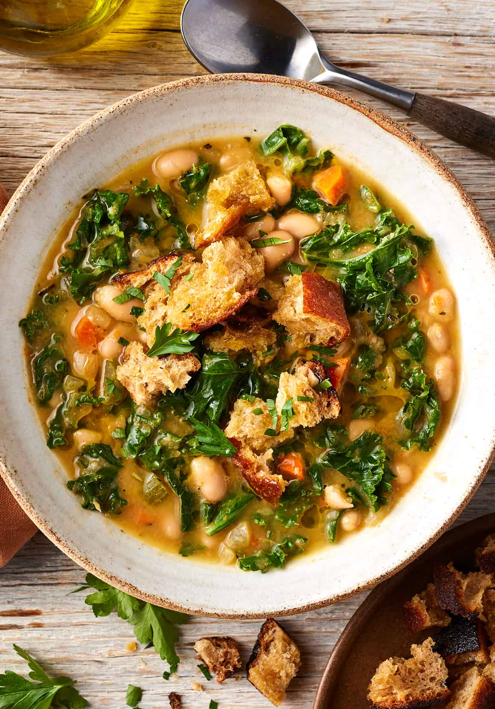

Kale soup
Rustle up a bowl of filling kale soup with pasta. Leafy green veg such as kale are
rich in chlorophyll and a natural sugar, which can help maintain a healthy gut.
Ingredients:
- 2 tbsp rapeseed oil
- 3 onions(320g),finely chopped
- 3 garlic cloves,finely grated
- 125g celery,chopped
- 2 yellow peppers,deseeded and diced
- 2 tsp smoked paprika
- 400g can chopped tomatoes
- 2 tsp dried oregano
- 1 litre hot vegetable stock
- 150g wholemeal penne
- 200g green beans,trimmed and cut into short lenghts
- 200g cavolo nero,thinli sliced
- 160g cherry tomatoes
- 30g pack of basil,chopped
Recipe instructions:
- Heat the oil in a large pan over a medium heat and fry the onions and garlic for 5 mins,
then add the celery and peppers. Fry for another 5 mins, adding the smoked paprika in the last minute.
Stir in the tomatoes, oregano and stock. Bring to the boil. - Tip in the penne, green beans and kale, bring back to the boil and cook over a medium heat for 10 mins.
Stir in the cherry tomatoes and basil, and cook for a few minutes more until the tomatoes have burst. - To serve, spoon two portions of the soup into shallow bowls and sprinkle over half the cheese.
Keep the remainder for another day. Will keep chilled in an airtight container for up to four days or frozen for up to three months. Reheat in a pan over a low-medium heat until piping hot, then serve with the remaining cheese.